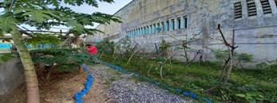
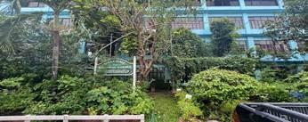
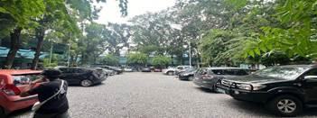
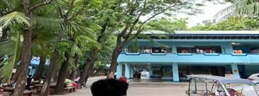
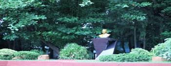
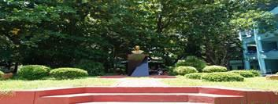
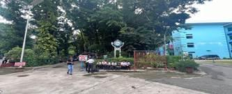
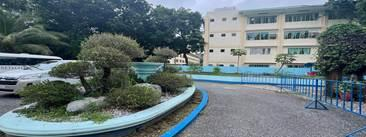

The campus of Urdaneta City University (UCU) is enriched by a remarkable network of forest vegetation and landscaped green areas that collectively create an environment of beauty, sustainability, and experiential learning. These natural spaces are thoughtfully integrated into the university’s campus design and include the Marawi/STP area, Botanical Garden, Square Garden, Chocolate Park, Orata Park, the Forest Area, and the central Fountain. Each of these areas contributes ecological, educational, and social value to the campus, supporting UCU’s mission of promoting environmental stewardship while fostering holistic development among students and the academic community.
Beyond enhancing the visual character of the campus, these green zones function as living laboratories and community spaces. They provide opportunities for research, outdoor learning, relaxation, and social interaction while also serving as sanctuaries for local flora and fauna. Through the preservation and development of these landscapes, UCU demonstrates its strong commitment to sustainability and to nurturing a university culture that values a meaningful connection with nature.

The Marawi/STP area serves both as an essential campus facility and as an ecological learning space. While it plays a crucial role in waste and water management, the area is also integrated with native vegetation that supports natural filtration processes and enhances local biodiversity. This site illustrates how environmental engineering can work harmoniously with natural systems, offering students a practical model of sustainable infrastructure. As an outdoor learning site, the Marawi/STP area allows students to explore topics such as ecological design, water treatment, and sustainable environmental practices.

The Botanical Garden is a vibrant and carefully curated space that features a diverse collection of native and exotic plant species. Functioning as a living laboratory, it supports academic programs in botany, agriculture, and environmental science by providing opportunities for observation, experimentation, and research. Shaded pathways and interpretive plant markers encourage educational exploration while creating a peaceful setting for study and relaxation. The garden also hosts environmental workshops, guided tours, and conservation activities that promote awareness of plant diversity and ecological preservation.

The Square Garden serves as a central landscaped hub that blends aesthetic beauty with practical use. Its well-maintained lawns, colorful flower beds, and seating areas make it a popular location for gatherings, student activities, and outdoor classes. The inviting atmosphere encourages interaction among students, faculty, and visitors, strengthening the sense of community on campus. More than a decorative space, the Square Garden represents UCU’s commitment to providing accessible green areas that promote wellness, collaboration, and outdoor learning.

Chocolate Park is one of the most unique attractions on campus, known for its distinctive theme featuring brown-toned benches, tables, and tree arrangements. This creative landscape combines artistic design with natural surroundings, creating a relaxing yet engaging environment. In addition to its aesthetic appeal, the park serves as a venue for educational exhibits related to agriculture, sustainability, and environmental awareness. Seasonal activities and community events, including chocolate-themed celebrations, further enhance its role as a space that connects culture, creativity, and environmental education.


Orata Park offers a serene and refreshing retreat within the campus. With shaded pathways, comfortable seating, and open picnic areas, it provides a peaceful setting for relaxation, informal gatherings, and quiet study. The park’s lush vegetation supports local biodiversity and creates a calm atmosphere that encourages reflection and stress relief. By offering a natural escape within the academic environment, Orata Park helps promote mental well-being and a deeper appreciation for nature among students and faculty.

The Forest Area is a preserved woodland that protects native plant species and serves as a natural habitat for wildlife. This area functions as a living ecological laboratory, where students can observe ecosystems, study biodiversity, and conduct environmental research. Activities such as birdwatching, ecological surveys, and nature walks make the forest an important resource for experiential learning. At the same time, it instills environmental awareness and responsibility, reinforcing the importance of conserving natural habitats and maintaining ecological balance.

The central Fountain stands as a landmark feature of the campus landscape, combining elegance with functionality. Surrounded by greenery and seating areas, it provides a tranquil space where students and visitors can gather, converse, or simply relax. The gentle sound of flowing water adds to the calming atmosphere, enhancing the overall campus environment. More than just a decorative element, the fountain symbolizes harmony, balance, and community life, making it a welcoming focal point within the university grounds.
Overall, the integration of these natural spaces reflects Urdaneta City University’s vision of a sustainable and student-centered campus. By blending ecological landscapes with academic and social functions, UCU creates an environment where learning extends beyond the classroom and where the university community can thrive in harmony with nature.